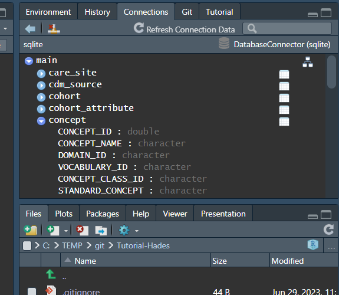

install.packages(c("DatabaseConnector", "SqlRender", "remotes"))
remotes::install_github("ohdsi/Eunomia")Querying the OMOP CDM with OHDSI-SQL
OHDSI-SQL
Each database platform speaks its own dialect of SQL. To allow the same code to run across all database platforms supported by OHDSI, we have developed OHDSI-SQL, a SQL dialect that is a proper subset of the SQL Server SQL dialect, but also supports parameterization of the SQL code. The HADES SqlRender package can translate OHDSI-SQL into any of the supported other SQL dialects.
You can use the online SqlDeveloper app to see how your OHDSI-SQL will be translated in to the various dialects.
The Using SqlRender vignette describes in detail what SQL commands are supported, and how the parameterization works.
Setup
Required packages
At the very minimum we’d need the DatabaseConnector and SqlRender packages. For these examples we’ll also use the Eunomia package.
We will assume these packages have already been installed as part of the full HADES installation. If not you can install them using:
Connecting to the Eunomia database
For these examples we’ll use the Eunomia package. This package can act as a full database server with data in the OMOP Common Data Model (CDM). To be able to connect to the database, we need to ask Eunomia for the connection details:
library(Eunomia)
connectionDetails <- getEunomiaConnectionDetails()
cdmDatabaseSchema <- "main"We also specify that the CDM database schema is ‘main’. (Different platforms have different interpretations of the words ‘database’ and ‘schema’, so we tend to use the neutral ‘database schema’).
We can now connect to the Eunomia database:
library(DatabaseConnector)
connection <- connect(connectionDetails)If you’re using RStudio, then you should now see a ‘Connections’ panel appear in the top right. Here you can explore the various tables in the database.

Example queries
How many persons are there in the database?
renderTranslateQuerySql(
connection = connection,
sql = "SELECT COUNT(*) FROM @cdm.person;",
cdm = cdmDatabaseSchema
) COUNT(*)
1 2694You’ll note that we did not explicitly mention the ‘main’ database schema in the SQL. Instead, we used OHDSI-SQLs parameterization, using a variable called cdm, which we later specified to be equal to the cdmDatabaseSchema variable we defined earlier. This makes our code re-usable over different databases; For another database, we simply specify other connectionDetails and cdmDatabaseSchema variables, and the same SQL will still work!
How many kids are there?
Using the age at observation start to distinguish between kids and adults:
sql <- "
SELECT COUNT(*)
FROM @cdm.person
INNER JOIN @cdm.observation_period
ON person.person_id = observation_period.person_id
WHERE YEAR(observation_period_start_date) - year_of_birth <= @maxAge;
"
renderTranslateQuerySql(
connection = connection,
sql = sql,
cdm = cdmDatabaseSchema,
maxAge = 18
) COUNT(*)
1 2694Now we had to join two tables (person and observation_period). We parameterized the maxAge, in case we want to make this an option we can change later.
What is the concept ID for celecoxib?
The CDM also contains the Vocabulary, which we can query:
sql <- "
SELECT *
FROM @cdm.concept
WHERE concept_name == '@name';
"
renderTranslateQuerySql(
connection = connection,
sql = sql,
cdm = cdmDatabaseSchema,
name = "celecoxib"
) CONCEPT_ID CONCEPT_NAME DOMAIN_ID VOCABULARY_ID CONCEPT_CLASS_ID
1 1118084 celecoxib Drug RxNorm Ingredient
STANDARD_CONCEPT CONCEPT_CODE VALID_START_DATE VALID_END_DATE INVALID_REASON
1 S 140587 1970-01-01 2099-12-31 <NA>How many GI bleed diagnoses are there?
In Athena we see that the concept ID for gastrointestinal hemorrhage is 192671. However, we probably want to find all GI bleeds, including those that are descendants of concept 192671, so for this we’ll join to the concept_ancestor table:
sql <- "
SELECT COUNT(*)
FROM @cdm.condition_occurrence
INNER JOIN @cdm.concept_ancestor
ON condition_concept_id = descendant_concept_id
WHERE ancestor_concept_id = 192671;
"
renderTranslateQuerySql(
connection = connection,
sql = sql,
cdm = cdmDatabaseSchema
) COUNT(*)
1 479Exercises
Now use what you’ve learned so far to answer the following questions:
- What is the minimum, maximum, and mean length (in days) of observation? (Hint: you can use the
DATEDIFFfunction to compute the time between two dates.) - How many people have at least one prescription of celecoxib. (Note: there’s an easy way to do this, using
drug_era, and a harder way usingdrug_exposureandconcept_ancestor. Can you do both?) - During which period in time (calender start and end date) did people start a celecoxib prescription?
Answers
No peeking!
1. What is the minimum, maximum, and mean length of observation?
sql <- "
SELECT MIN(observation_length) AS min_days,
MAX(observation_length) AS max_days,
AVG(observation_length) AS mean_days
FROM (
SELECT DATEDIFF(
DAY,
observation_period_start_date,
observation_period_end_date
) AS observation_length
FROM @cdm.observation_period
) tmp;
"
renderTranslateQuerySql(
connection = connection,
sql = sql,
cdm = cdmDatabaseSchema
) MIN_DAYS MAX_DAYS MEAN_DAYS
1 0 40348 144012. How many people have at least one prescription of celecoxib.
You can use the drug_era table, which already has all drugs rolled up to the ingredient level:
sql <- "
SELECT COUNT(DISTINCT person_id)
FROM @cdm.drug_era
WHERE drug_concept_id = 1118084;
"
renderTranslateQuerySql(
connection = connection,
sql = sql,
cdm = cdmDatabaseSchema
) COUNT(DISTINCT PERSON_ID)
1 1844If you use the drug_exposure, you will need to use the concept_ancestor table to map drugs to ingredients yourself:
sql <- "
SELECT COUNT(DISTINCT person_id)
FROM @cdm.drug_exposure
INNER JOIN @cdm.concept_ancestor
ON drug_concept_id = descendant_concept_id
WHERE ancestor_concept_id = 1118084;
"
renderTranslateQuerySql(
connection = connection,
sql = sql,
cdm = cdmDatabaseSchema
) COUNT(DISTINCT PERSON_ID)
1 18443. During which calendar dates did people start a celecoxib prescription?
Because we want to know when people started a prescription, we can’t use the drug_era table anymore, since that combines multiple prescriptions into single eras.
sql <- "
SELECT MIN(drug_exposure_start_date) AS min_date,
MAX(drug_exposure_start_date) AS max_date
FROM @cdm.drug_exposure
INNER JOIN @cdm.concept_ancestor
ON drug_concept_id = descendant_concept_id
WHERE ancestor_concept_id = 1118084;
"
renderTranslateQuerySql(
connection = connection,
sql = sql,
cdm = cdmDatabaseSchema
) MIN_DATE MAX_DATE
1 1941-12-05 2019-06-21Disconnecting
It is good to get into the habit of closing all connections you open, making sure the database resources are avialable for the next person:
disconnect(connection)